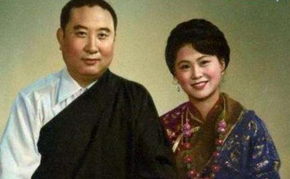

中国藏传
班禅额尔德尼·确吉坚赞大师，俗名贡布才旦，于1938年2月19日出生在青海省循化县一个贫苦农民
1951年初，中央电示十四世达赖
1954年9月15日，召开第一届全国人大，班禅被选为代表进京，受到党和国家领导人高规格的接待，朱德、周恩来等800多人聚集火车站，迎接西藏达赖、班禅两位佛教领袖，次日还举行盛大宴会。在宴会上，班禅激动地举杯说：“承蒙中央首长对我们热烈欢迎和设宴招待，我们深为感激。现在我以最兴奋愉快的心情，向各位首长致以亲切的感谢和崇高的敬意。”在一届人大一次会议上，班禅当选为全国人大常务委员会委员，在全国政协二届一次会议上当选为全国政协副主席。16岁的班禅大师成了最年轻的国家领导人。
1955年3月9日，国务院第七次全体会议通过了《关于成立西藏自治区筹备委员会的决定》，任命达赖为筹委会主任委员，班禅为第一副主任委员。这时，西藏反动组织“人民会议”分子跳出来反对成立自治区筹委会，反对进行民主改革。班禅多次召开会议，予以驳斥，明确指出：“黄教系藏族地区喇嘛教中的最大教派，其始祖宗喀巴大师的优良传统，在于坚持改革，兴利除弊。我们要把‘庄严国土、利乐有情’和‘普渡众生’的教义同爱国主义、为人民服务的宗旨结合起来，探索
1956年冬至1957年春，应印度副总统邀请，参加释迦牟尼涅2500周年纪念活动，达赖与班禅各率一大批随员赴印度
1957年，叛乱分子反对西藏民主改革，扬言要武装攻击扎什伦布寺和堪布会议厅委员会，班禅组织大家做好武装自卫的准备，并多次建议中共中央命令解放军驻藏部队平息叛乱。1959年3月10日，以达赖为首的上层反动集团，公然撕毁和平解放西藏的“十七条协议”，在拉萨发动大规模武装叛变，越境逃往印度。班禅在日喀则得知此消息后，当即毅然表示：“我决不支持和参与达赖的叛国行动，坚决服从中央人民政府的领导。”班禅在关键时刻所表现的爱国情操，又一次受到毛泽东、周恩来的热情嘉勉，并任命他为西藏自治区筹委会代主任委员。班禅得到党和人民的充分信任，极其兴奋，更加积极工作，为百万翻身农奴的彻底解放竭尽全力。4月，班禅再次进京参加两会，当选为二届全国人大常委会副委员长和三届全国政协常委。10月1日，班禅又应邀赴京出席建国10周年大庆。由于他的工作卓有成效，周恩来、朱德特意在中南海紫光阁设宴热情款待，共同祝贺西藏平叛胜利和民主改革取得的成就。
“文革”10年遭受迫害西藏民主改革后期，出现了一些“左”的偏向和不切合实际的做法，一些藏民有较大的抵触情绪，向班禅大师反映了不少意见。班禅对一些汉族干部的“左”倾工作作风很不满意，到北京向中央领导反映情况。毛泽东对班禅大师敢于直言讲真话表示赞许，对他所提出的一些好意见和建议给予肯定和鼓励。中央派杨静仁去西藏调查，情况属实。1961年1月5日，邓小平听取杨静仁的汇报后，指示西藏民主改革必须防“左”、防急，稳定发展，五年不办合作社。
班禅以全国人大副委员长身份到青、甘、川、滇、疆等省区视察和调查，在视察中，他不断发现一些“左”的问题，听到一些反映，心中极不愉快，导致他与西藏自治区某些党政领导发生尖锐的意见冲突。中央统战部长李维汉陪同他到上海、浙江、江西参观，沿途与他作了多次长谈。由于看问题的角度和认识程度的差异，仍未能化解他心中的不满情绪，他说：“那些问题本来就不应该发生，我对此总是很难想得通。”1961年1月24日，周恩来与班禅谈话，劝他回去帮助党政领导纠正“左”的错误，并推心置腹地对他说：“只要不背叛祖国，不压迫群众，保守一点，慢一点不要紧。今后我们之间多谈心，成为‘随便、自由、不客气’的朋友。”班禅压抑的心情得到一些缓解，但还存在疑虑，于是就产生了写一份详细意见书上报中央的念头。
在班禅身边工作的人劝他不要写，要三思而后行，但他是个急性子，说干就干，很快就动笔了。他先用藏文写，然后组织人员译成汉文，至1962年6月初定稿，呈送国务院，标题为《关于西藏总的情况和具体情况以及西藏为主的藏族各地区的甘苦和今后希望要求的报告》，全文洋洋洒洒7万多字，被称为“七万言书”。报告共分8个部分：①关于平叛斗争；②关于民主改革；③关于农牧业生产和群众
周恩来反复看了“七万言书”，作出了精辟的概括：“班禅的报告，可分作七个认识、八个问题、五个宗教原则。七个认识有许多错误，八个问题都是事实，宗教五个原则很好，可以拿过来。”总理指的八个问题即报告的八个部分，这都是客观存在的事实，无可非议。“可以拿过来”的五个宗教原则，就是班禅很有见地的五项主张，即放弃剥削，民主管理，“宪法进庙”，从事劳动，政府关怀补贴。至于七个认识，则是从“七万言书”中抽取的七点不同认识。总理认为班禅在这些认识中，很多是片面的，错误的，应该和他讲清楚。但总理同时认为，“这些思想认识都属于人民内部矛盾，他是站在爱国立场上提出来的”。
遗憾的是，在1962年秋的八届十中全会后，阶级斗争扩大化的错误倾向在全党开始蔓延，有些人认为“七万言书”是“农奴主夺无产阶级专政的权”，是一部“反党反社会主义的反动纲领”，甚至认为是同彭德怀在庐山会议上的“八万言书”互相呼应，“一个在党内，一个在党外，共同向党进攻”。更有甚者，把班禅的意见与中印边界问题联系起来，认为是“具有国际背景的阶级斗争”。
年轻气盛的班禅，面对这种无限上纲上线的严厉批判，无法忍受，他一再申明自己的动机是好的，只是口快心直，根本不存在反党问题。他说：“我这个人看到‘左’的错误，看到不合理现象，看到老百姓吃苦受难，从心底感到气愤，根本坐不住。要我不讲话，或者讲好听的假话，或者闭上眼睛，我根本办不到，这大概叫‘江山易改，本性难移’吧！”
1964年秋，自治区筹委扩大会对班禅再次展开了猛烈的批判，班禅据理力争，但发言屡被打断。不久，班禅被撤销区筹委会代理主任职务。接着，人大副委员长和政协副主席的职务也被撤销，只保留了政协常委职务。1966年夏，“文革”开始了，少数红卫兵不顾中央的指示，擅自召开批斗大会，并抄了班禅的家。1968年夏，林彪集团把班禅带走，送去“隔离监护”，实际是投入监狱。从此，他经历了9年又8个月的铁窗生活，直到粉碎“四人帮”以后，班禅才于1977年10月走出监狱。
辛劳过度，英年早逝班禅虽然蒙冤受屈，但并不后悔上“七万言书”。他始终认为周总理说的“七个认识有许多错误”完全正确，为此向有关领导表示：“过去我确实犯了错误，说了一些错话，做了一些错事，今后我准备好好总结一下，再给中央写个检讨报告。”
班禅出狱后，想找一个伴侣共同生活。他在认识董其武的外孙女李洁之后，向其求婚。李洁生于1958年，比他小20岁，系军医大学的漂亮女学生，被班禅大师的气质所吸引，也愿意放弃学业，与大师完婚。但此事遇到舆论阻力。班禅申辩说：“喇嘛结婚并不违反教规。达赖喇嘛的哥哥嘉乐顿诛结了婚，达赖的弟弟也结了婚，他们都是活佛，可见一定程度是可以结婚的。”他们二人向中央打报告，申请结为伉俪。1978年6月，由邓小平亲自批准同意，在街道办事处领取了结婚证书。接着在民族文化宫隆重举行结婚典礼，李先念、张爱萍、杨得志、阿沛·阿旺晋美、
1979年西藏分裂势力打出“独立”旗号，班禅旗帜鲜明地进行针锋相对的斗争。他想起周恩来生前的谆谆教导：“你要经常注重维护祖国统一、民族团结和各民族的共同发展，按照宪法和法律的要求，充分地、正确地行使民族区域的自治权。”于是他在讲经传法和政务活动中，屡屡强调要加强藏汉民族的团结，反对分裂。他说：“我维护祖国统一的立场是坚定不移的，对于分裂祖国的行径，我过去反对，现在反对，将来也反对，我愿为维护祖国统一的伟大事业作出最大牺牲。”
班禅大师恢复政务活动后，在1979年7月全国政协五届二次会议上被增选为副主席，接着又在全国人大五届三次会议上补选为副委员长，从此重新走上了国家领导人岗位。有人问他对“左”的偏差给他精神上带来的巨大伤害有何感想，他说：“与老一辈革命家们所受到的迫害相比，我这点委屈算得了什么呢？这一切已经成为过去了，党中央已经给我彻底平反，使我在政治上获得了第二次生命，重新得到了为全国各族人民和藏族人民服务的机会，我恳切地希望大家摒弃前嫌，团结起来向前看，互相谅解，互相勉励，互相帮助，互相支持，并肩携手，为国家四个现代化建设出力。”
1980年班禅去西藏各地视察工作，行前邓小平邀他到家里作客，一见面就说：“班禅大师，你是我们国家最好的爱国者。”席间，邓小平教导说：“大师这次下去视察，不要有顾虑，你自己的活动可以放手，你可以说‘文革’中的那些事都搞错了，你不要怕，就说这是中央领导同志讲的。”班禅听后顿时心中涌起一股暖流，受到极大鼓舞。他更加热爱党，更加信任党，决心夜以继日地学习和工作，报答党的关怀，把失去的时间补回来。
班禅熟读历史典籍，对祖国的历史有着透彻的了解，在佛教经典的研习上有较高的造诣，多次讲解教义，宣传党的宗教政策，深受藏族群众的尊敬和爱戴。同时，他还十分重视西藏教育事业的发展，主张小学生要学民族语文，西藏要建一所藏文大学，倡导在北京创办一所高级藏传佛学院，并亲任院长。
1989年1月9日，班禅大师乘专机离开北京，前往西藏日喀则市扎什伦布寺，主持五世至九世班禅大师遗体合葬灵塔祀殿--班禅东陵札什南捷开光典礼。习仲勋送行时对班禅大师说：“这个季节西藏缺氧严重，你要注意自己的身体，不要性急，要劳逸结合。”大师说：“开光典礼办完，便遂了我最大的心愿，就是死了也瞑目。”习仲勋说：“佛不要你走，马克思也不要你走。”
班禅大师到达拉萨的第二天，就去参拜大昭寺。14日，驱车300公里赶到日喀则。22日，主持了5个小时的开光典礼，最后当众宣布：“我的任务完成了！”接着他召集一系列座谈会，还不顾连日劳累，为数万名